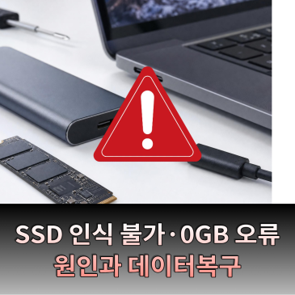

2024.07.15 · 공식 영상유튜브에서 보기 ↗
MDFC STORY
명정보기술의 분석 이야기와 공식 블로그, 유튜브 콘텐츠를 한곳에서 만나보세요.
MDFC EDITORIAL
MDFC 원문6개
디지털포렌식과 기업 보안을 바라보는 관점.
홈페이지에서 편하게 읽는 주제별 이야기입니다.
 MDFC EDITORIAL / 01RECORDS ≠ CONCLUSIONSFORENSICS NOTE
MDFC EDITORIAL / 01RECORDS ≠ CONCLUSIONSFORENSICS NOTE원문 · 예시디지털포렌식USB 연결 기록만으로
USB 연결 기록만으로
자료 유출을 확정할 수
없는 이유
기록이 말해 주는 것과 아직 말해 주지 않는 것. 연결 흔적을 결론으로 바꾸기 전에 함께 봐야 할 자료를 살펴봅니다.
INCIDENT RESPONSE / READING THE TRACE계정의 흔적은
여러 곳에 남습니다.
여러 곳에 남습니다.
계정 도용이 의심된다면,
어떤 기록을 준비할까요?
발생 시점과 의심 증상, 확보한 자료를 정리하는 관점.

퇴사자 관리,
자료 보존과 권한 회수를 함께.
기기·계정·공유 자료를 담당자 간 확인하는 시작점.
BACKUP / DIFFERENT ROLES저장하는 일과
복구를 준비하는 일.
복구를 준비하는 일.
NAS가 있어도
별도 백업을 살펴보는 이유
저장 구성과 백업 사본, 복원 시험의 서로 다른 역할.

대화의 흔적이 남았다는 것과
내용을 확보했다는 것
기록의 존재와 실제 내용 확보를 나눠 설명하는 이유.

사고를 발견한 담당자가
먼저 남겨 둘 기록
화면과 시점, 증상과 업무 영향을 정리해 상담으로 연결하기.
OFFICIAL BLOG
네이버 블로그3개
생활 속 데이터 문제와 저장매체·복구 이야기.
명정보기술의 공식 블로그 원문으로 이어집니다.

문자 링크를 잘못 눌렀다면 해킹된 걸까? 스미싱 링크 클릭 후 확인해야 할 것
스미싱 의심 링크를 누른 뒤 확인할 내용을 다루는 공식 블로그 글입니다.
네이버 블로그 원문, 새 창
RAW로 변한 하드디스크 복구 방법｜포맷 없이 데이터 살리는 방법
RAW로 표시되는 저장매체 문제와 복구를 다루는 공식 블로그 글입니다.
네이버 블로그 원문, 새 창
SSD 펌웨어 손상 복구 방법｜SSD 인식 불가·0GB 오류 원인과 데이터복구
SSD 인식 문제와 펌웨어 손상을 주제로 한 공식 블로그 글입니다.
네이버 블로그 원문, 새 창OFFICIAL VIDEO
유튜브3개
포렌식 이야기부터 데이터 복구와 분석의 차이까지.
공식 영상으로 조금 더 쉽게 살펴보세요.
조건에 맞는 콘텐츠가 없습니다.
검색어를 바꾸거나 콘텐츠 유형과 주제를 ‘전체’로 선택해 보세요.